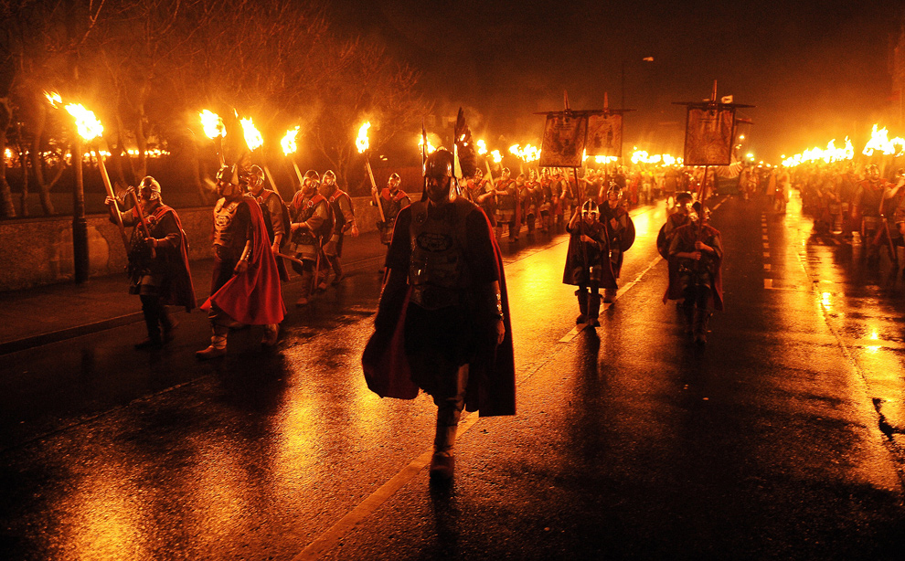
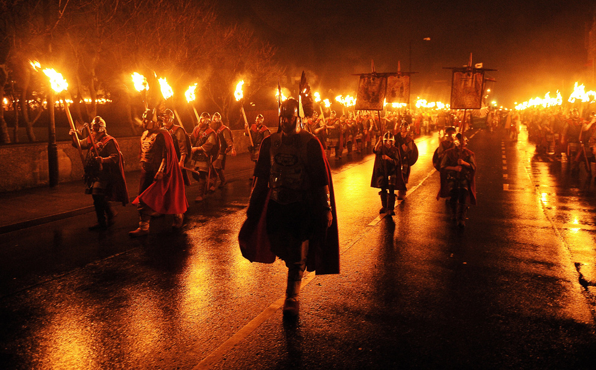
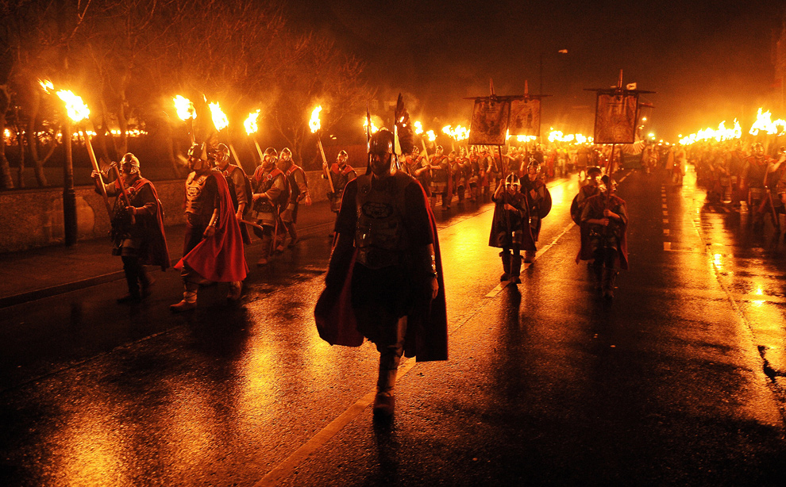
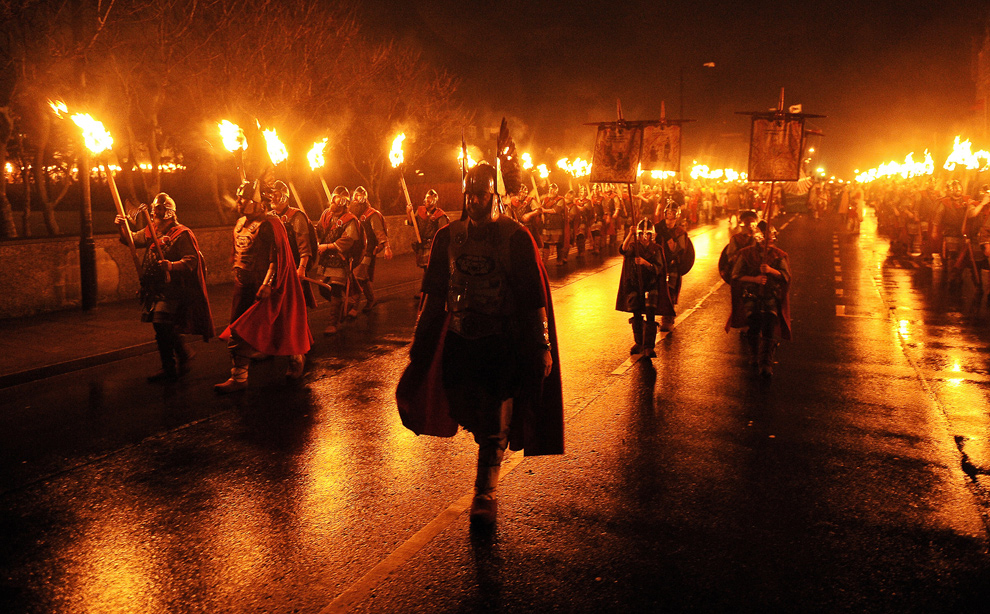

La Tomatina - Spain
Carnevala di Venezia - Italy
Oktoberfest - German
The Cooper's Cheese Rolling and Wake - The United Kingdom
Finland has the most interesting festival in the world, that is, mobile phone throwing. This is an international sport and it started in 2000. Participants throw mobile phones and compete the distance and technique. It has four groups and lots of people can enjoy this festival like children or elderly people. This festival is held in Savonlinna, Finland every year.

Finland has the most interesting festival in the world, that is, mobile phone throwing. This is an international sport and it started in 2000. Participants throw mobile phones and compete the distance and technique. It has four groups and lots of people can enjoy this festival like children or elderly people. This festival is held in Savonlinna, Finland every year.

Finland has the most interesting festival in the world, that is, mobile phone throwing. This is an international sport and it started in 2000. Participants throw mobile phones and compete the distance and technique. It has four groups and lots of people can enjoy this festival like children or elderly people. This festival is held in Savonlinna, Finland every year.

Finland has the most interesting festival in the world, that is, mobile phone throwing. This is an international sport and it started in 2000. Participants throw mobile phones and compete the distance and technique. It has four groups and lots of people can enjoy this festival like children or elderly people. This festival is held in Savonlinna, Finland every year.